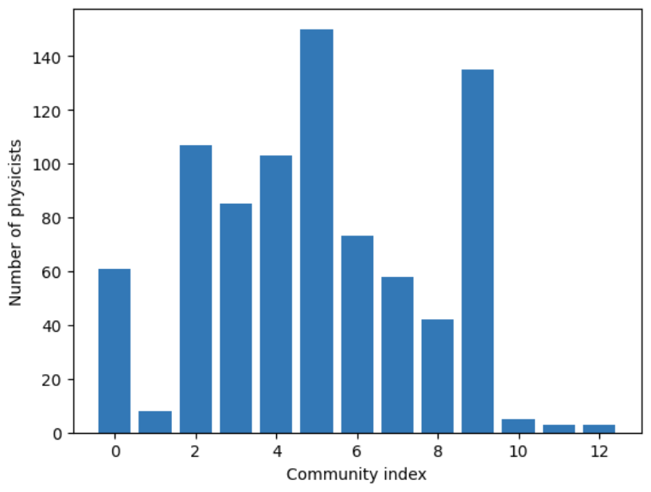
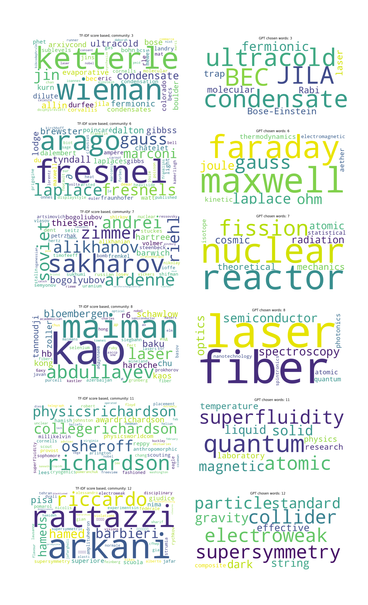

Interactive Louvain network
Nr of phycisist pr community
The following interactive graph show the graph of physicists partitioned using the Louvain algorithm. This algorithm groups of nodes that have high interconnectedness.
Wordcloud
Wordclouds for chosen communities with comparison between tdf-idf and chatGPT
